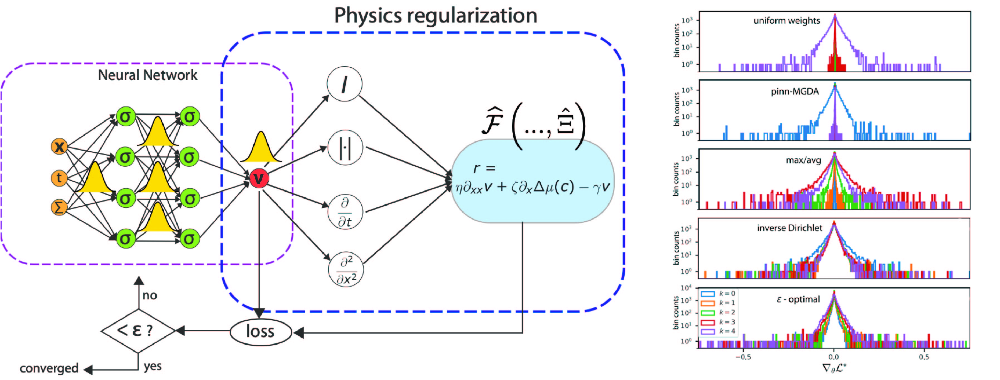
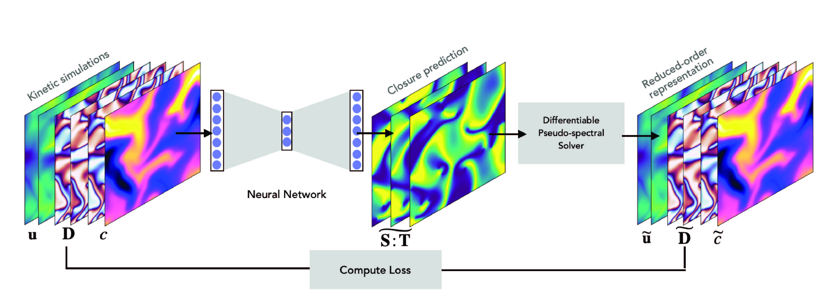
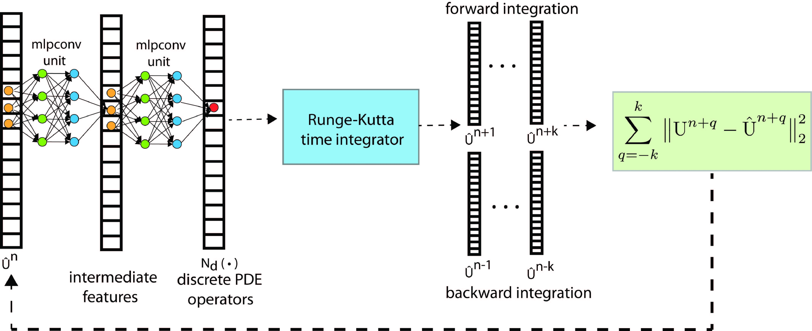
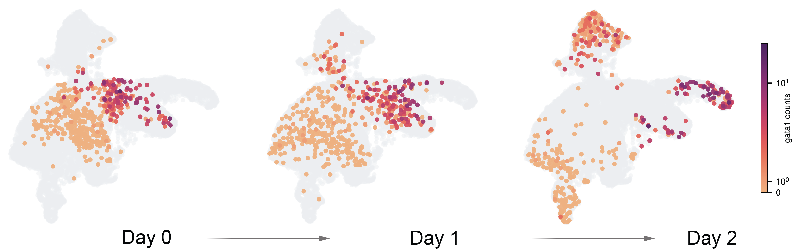

We develop mathematical and computational methods to understand complex biological systems — combining physics, machine learning, and data-driven modeling.
Differential equation models are central to describing complex biological dynamics, yet most systems lack a complete mechanistic characterization. We develop statistical inference frameworks, grounded in the theory of stability selection, that learn biophysically consistent PDE and ODE models directly from limited, noisy data, and extend this approach to enforce first-principle constraints such as conservation laws and symmetries. Applied to protein concentration data from C. elegans embryogenesis, the approach reconstructs the causal network of protein interactions and their stoichiometry from purely observational measurements, providing models that biophysicists can refine with targeted priors or use to directly guide new experiments.
In many biological systems, prior experiments suggest plausible mechanisms, but quantifying their relative contributions requires inferring parameters, such as reaction rates, diffusion constants, and stress fields, that govern molecular organization in space and time. We develop an uncertainty-based weighting strategy that extends physics-informed neural networks (PINNs) to complex, multiscale problems in spatial biology, enabling inference of latent physical fields directly from noisy experimental data. We apply this framework to infer parameters of coarse-grained models of bacterial turbulence from PIV data, and extend it to precondition Hamiltonian Monte Carlo samplers for training Bayesian PINNs. These advances open opportunities across spatial biology, a field dominated by nonlinear spatiotemporal processes with often unknown physics.

Biological systems span vast parameter spaces and operate across multiple scales, making direct numerical simulation computationally prohibitive. We build data-driven surrogate models to explore these regimes efficiently and uncover emergent behavior, including STENCIL-NET, which embeds neural networks within higher-order numerical integrators to learn stable, equation-free propagators from data for long-horizon forecasting, coarse-graining, and prediction of complex or chaotic dynamics. Extending this idea, we design rotationally invariant neural operators that learn closure models directly from kinetic simulations of active particle systems, including bacterial suspensions and filament mixtures. These models accelerate simulations by up to 100x without sacrificing stability or accuracy, making it possible to explore broad parameter spaces and generate rich data for training large AI models.


Integrating multimodal data to build predictive biophysical models is a central theme of our work. We study microtubule organization within human mitotic spindles by combining static ultrastructural data from serial-section electron tomography with dynamic, spatially coarse live-cell microscopy measurements. Fusing these complementary data sources, we develop a biophysical model, based on active liquid crystal theory with interpretable parameters, that captures the collective behavior of microtubules driving spindle self-organization. This framework shows how collective organization emerges from molecular interactions, offering a predictive, biophysical description of spindle self-organization grounded in multimodal experimental data.
Understanding how molecular programs operate in single cells and reconfigure during differentiation and disease remains a central challenge in biology, even in well-characterized systems such as hematopoiesis. Advances in single-cell transcriptomic and chromatin accessibility profiling now capture regulatory dynamics at high resolution, raising the question of whether the underlying regulatory programs can be inferred directly from such data. This inverse problem is complicated by intrinsic stochasticity in gene expression, cell proliferation and death, unobserved variables, and the cross-sectional nature of most high-throughput assays. We address these challenges with Probability Flow Inference (PFI), a framework that infers stochastic gene-regulatory dynamics from time-resolved single-cell data by explicitly modeling transcriptional noise and cell proliferation and death. Given the pervasive role of stochasticity in gene expression, PFI is a step toward biophysically grounded, stochastic models of gene regulation and cellular dynamics, essential for constructing the virtual cell.
